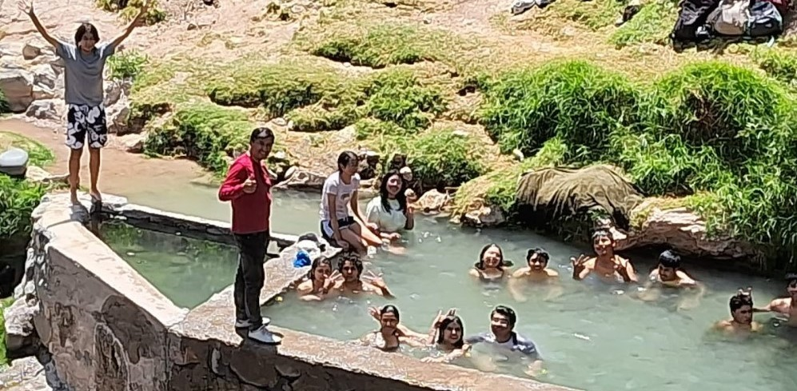

Los griegos ya descubrieron los beneficios de este tipo de baño, pero los romanos fueron los precursores y grandes constructores de termas. En un primer momento, estas instalaciones eran privadas, construidas en las villas, pero al final se institucionalizó su uso y comenzaron a proliferar los baños públicos o thermae. Tambien destacar que todas las aguas termales, al igual que las subterráneas, provienen del agua de lluvia o de deshielo que se infiltra a través del suelo, es decir, pertenecen al ciclo hidrológico. Pero no toda el agua que cae sobre la superficie terrestre como lluvia o nieve sigue el mismo camino.

|
|